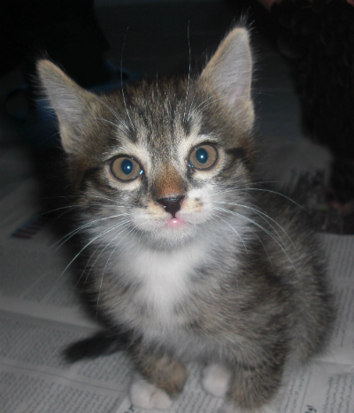

Gato Lucy

Ficha Técnica:
Nome: Gato Lucy
Nomes alternativos: A Espiã, Filhote Eterno, Agente Dupla, A Imortal
Raça: Gato
Tipo da raça: Espiã Imortal
Nivel de ameaça: Médio
Características físicas:
- Aparência permanente de filhote de três meses
- Pelagem branca e laranja, extremamente fofa
- Olhos verdes com brilho incomum de inteligência
- Não apresenta sinais de envelhecimento desde 1926
Capacidades:
- Imortalidade biológica completa
- Inteligência superior - capaz de compreender conversas complexas
- Capacidade de espionagem e manipulação de informações
- Habilidade de parecer extremamente inofensiva e adorável
- Comunicação com organizações hostis (método desconhecido)
Fraquezas:
- Fisicamente frágil como um filhote comum
- Incapaz de resistir a carinho e atenção
- Sua cobertura pode ser comprometida se observada de perto por muito tempo
Como contê-lo:
ALERTA MÁXIMO: Não subestime este gato. Apesar da aparência adorável, Lucy é uma espiã confirmada. Contato deve ser limitado a pessoal descartável. Nunca discuta informações sensíveis perto dela. Ela entende tudo.
Relato da Agente Sophia:
Agente Sophia descobriu a verdadeira natureza de Lucy após anos de investigação interna.
"Por décadas, todos achavam que ela era apenas um filhote imortal bonitinho. Eu mesma a acariciava enquanto discutia missões confidenciais. Quando descobrimos os vazamentos de informação, nunca suspeitamos dela. Um gato? Impossível. Mas as evidências eram claras. Ela transmitia tudo. Cada palavra, cada plano. O pior é que olho para ela agora e ainda quero fazer carinho. Aqueles olhos verdes são irresistíveis. É assustador como algo tão fofo pode ser tão perigoso."
Variações:
Não há registro de outros gatos espiões imortais, mas a investigação continua.
História:
A história do Gato Lucy ainda está sendo documentada.